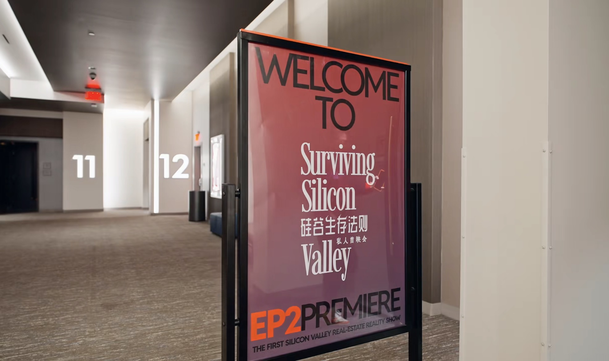

Surviving Silicon Valley × AMC Year of the Horse EP2 Screening Draws a Full House. Following the momentum of its debut episode, Surviving Silicon Valley returned with a new chapter—this time on the big screen at AMC.
The EP2 preview screening brought audiences together for a closer look at one of the show's central themes: the tension between parental love and control, and the complicated space in between.
What began as a first-time screening for EP1 has quickly grown into something more. The latest event felt as much like a reunion as it did a premiere, welcoming back familiar supporters while opening the door to a wider community.